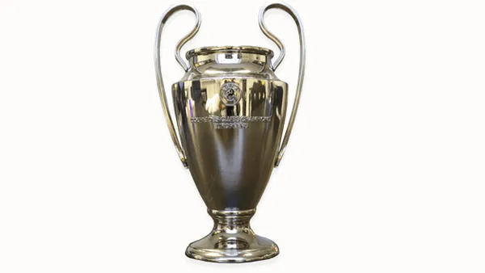
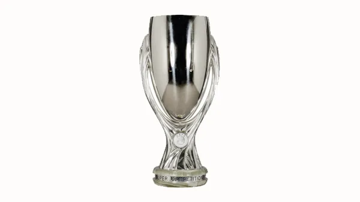
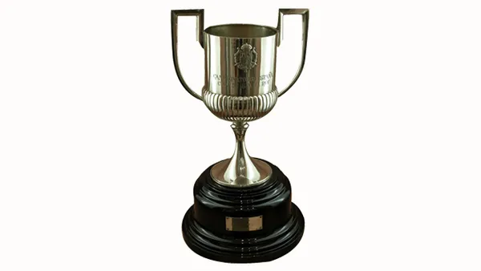

Champions League - 5
1992, 2006, 2009, 2011, 2015

Fifa Club World Cup - 3
2010, 2012, 2016

European Super Cup - 5
1993, 1998, 2010, 2012, 2016

Spanish League Championship - 28
1929, 1945, 1948, 1949, 1952, 1953, 1959, 1960, 1974, 1985, 1991, 1992, 1993, 1994, 1998, 1999, 2005, 2006, 2009, 2010, 2011, 2013, 2015, 2016, 2018, 2019, 2023, 2025, 2026

Copa del Rey - 32
1910, 1912, 1913, 1920, 1922, 1925, 1926, 1928, 1942, 1951, 1952, 1953, 1957, 1959, 1963, 1968, 1971, 1978, 1981, 1983, 1988, 1990, 1997, 1998, 2009, 2012, 2015, 2016, 2017, 2018, 2021, 2025